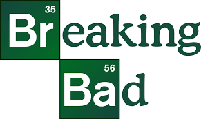

Walter White, un profesor de química con cáncer terminal, decide fabricar metanfetamina para asegurar el futuro de su familia. Su vida se transforma radicalmente al asociarse con Jesse Pinkman, enfrentando crimen, traiciones y violencia. Cada decisión lo acerca a la oscuridad, mientras ambición y moralidad chocan, llevándolo a un poder peligroso y a consecuencias devastadoras que cambiarán su vida para siempre.

Ver serie
Temporada 1
Walter White, un profesor de química, descubre que tiene cáncer y decide fabricar metanfetamina para asegurar el futuro económico de su familia. Comienza su transformación moral. La relación con Jesse Pinkman se establece, mostrando dilemas éticos y peligros del mundo del narcotráfico que cambiarán sus vidas.
Temporada 2
La vida de Walter y Jesse se complica. Secretos y mentiras se acumulan mientras los problemas legales y personales crecen. Accidentes y decisiones arriesgadas generan tensión y consecuencias inesperadas. La adicción, la ambición y la moralidad se enfrentan, estableciendo un camino oscuro hacia la violencia y la destrucción.
Temporada 3
Walter y Jesse se enfrentan a nuevas amenazas, incluyendo a poderosos criminales como Gus Fring. Las estrategias y traiciones aumentan. Jesse lidia con su culpa y dolor. Walter consolida su identidad como Heisenberg, mostrando ambición y manipulación, mientras la línea entre familia, negocio y crimen se vuelve cada vez más borrosa.
Temporada 4
La tensión alcanza su punto máximo. Gus Fring se convierte en enemigo implacable, planeando contra Walter y Jesse. Estrategias, engaños y traiciones dominan la historia. La inteligencia de Walter se enfrenta a peligros letales. La temporada culmina en un desenlace explosivo que redefine poder, venganza y supervivencia.
Temporada 5
La temporada final muestra la caída definitiva de Heisenberg. Walter alcanza la cima de su poder, pero su imperio colapsa. Traiciones, muertes y decisiones irreversibles marcan el cierre. La familia, el crimen y la ambición chocan violentamente, concluyendo la transformación de Walter y dejando un legado oscuro e inolvidable.